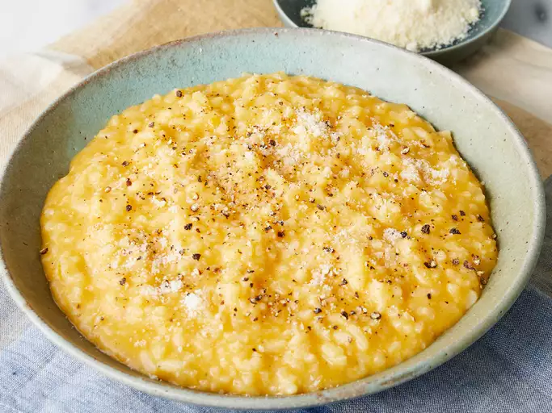

Butternut Squash Risotto

Description
If you like the naturally sweet flavor of butternut squash, you'll love this risotto! It is so creamy and full of flavor. Great as a fall side dish or main course.
Ingredients
- 2 cups cubed butternut squash
- 2 tablespoons butter
- 1/2 onion, minced
- 1 cup Arborio rice
- 1/3 cup dry white wine
- 5 cups hot chicken stock
- 1/4 cup grated Parmesan cheese
- Salt and pepper to taste
Steps
- Place squash into a steamer basket in a saucepan; fill with water to just below the bottom of the basket. Cover, bring to a boil, and steam squash until tender, 10 to 15 minutes. Drain; use a fork to mash squash in a bowl.
- Melt butter in a saucepan over medium-high heat. Add onion; cook and stir for 2 minutes until onion begins to soften, then stir in rice. Continue cooking and stirring until rice is glossy and the onion begins to brown on the edges, about 5 minutes more.
- Pour in white wine; cook, stirring constantly, until it has evaporated. Stir in mashed squash and 1/3 of the hot chicken stock; reduce heat to medium.
- Cook and stir until chicken stock has been absorbed into rice, 5 to 7 minutes. Add 1/2 of the remaining chicken stock, and continue stirring until it has been absorbed. Finally, pour in remaining stock, and continue stirring until the risotto is creamy.
- Stir in Parmesan cheese and season with salt and pepper.